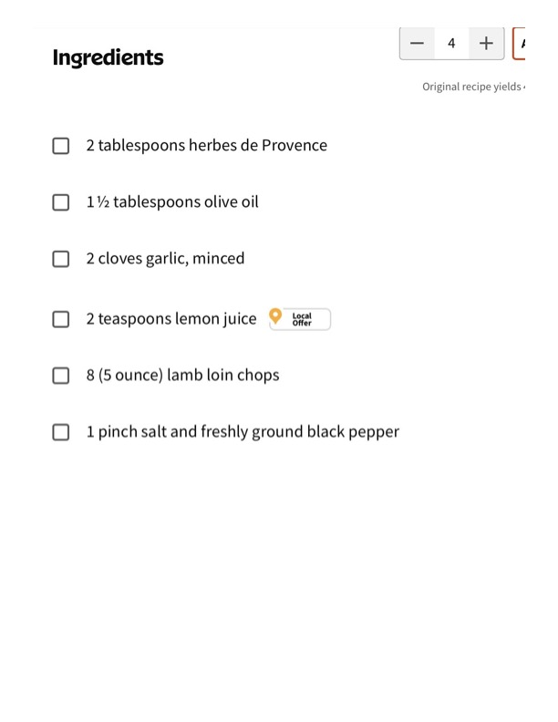

Grilled Lamb Chops with Herbes de Provence

Original cookbook page 270
Herb-marinated lamb loin chops grilled to perfection with a Mediterranean herb blend marinade.
Prep: 15 minutes (plus 1-4 hours marinating) • Cook: 8 minutes • Total: 25 minutes plus marinating time
Ingredients
- 2 tablespoons herbes de Provence
- 1½ tablespoons olive oil
- 2 cloves garlic, minced
- 2 teaspoons lemon juice
- 8 (5 ounce) lamb loin chops
- Salt and freshly ground black pepper to taste
Instructions
- Combine herbes de Provence, olive oil, garlic, and lemon juice in a small bowl. Rub mixture over lamb chops and refrigerate for at least 1 hour.
- Preheat an outdoor grill for medium-high heat and lightly oil the grate.
- Season chops with salt and pepper.
- Place chops on the preheated grill and cook until browned and medium-rare on the inside, 3 to 4 minutes per side. Remove from grill and place on an aluminum foil-covered plate to rest for 5 minutes before serving.
Recipe #270 from collection